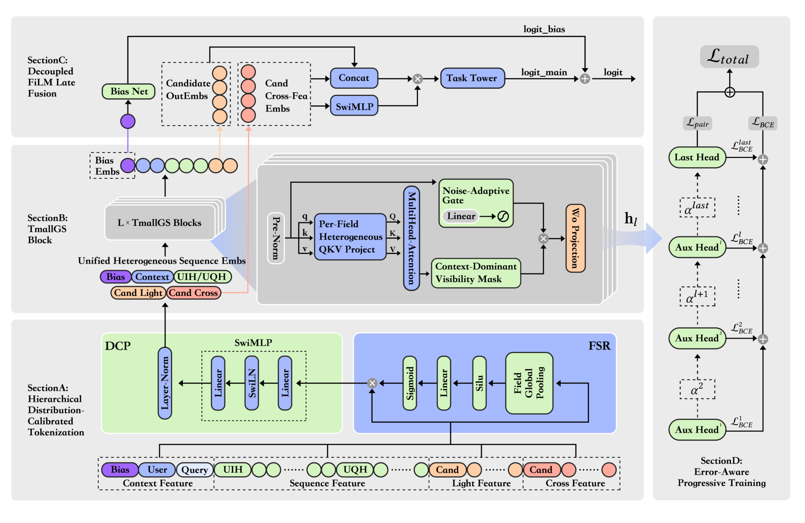
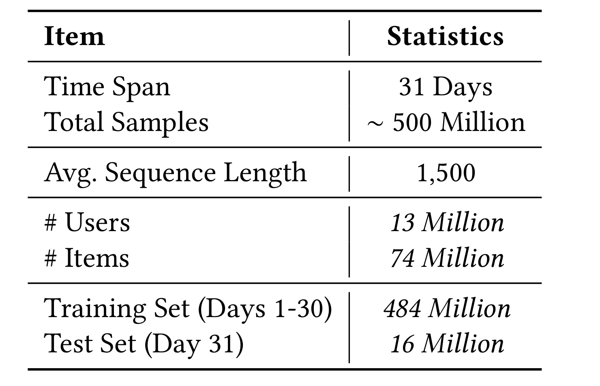
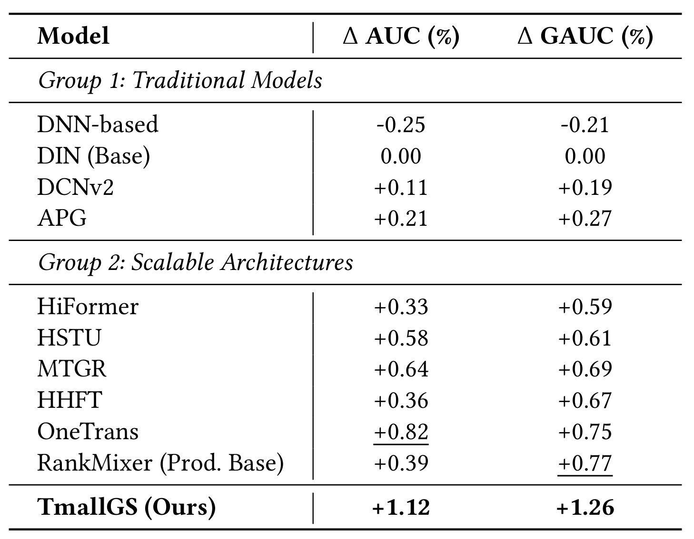
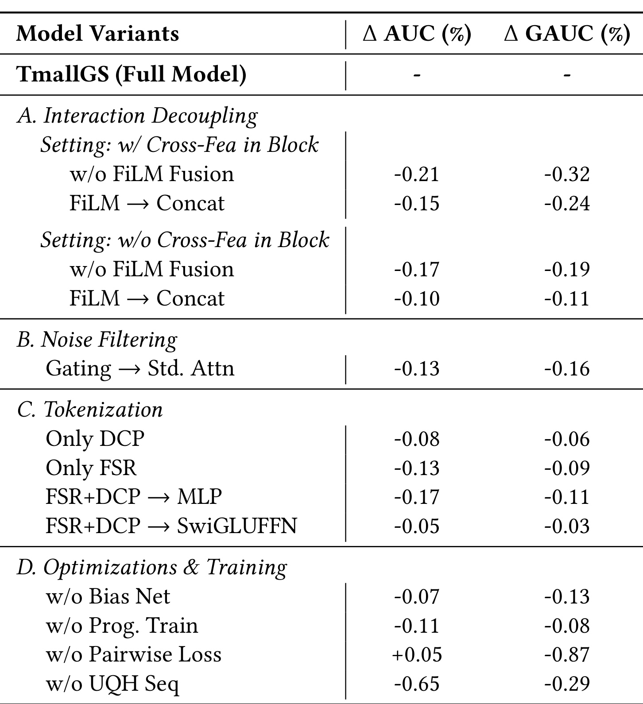
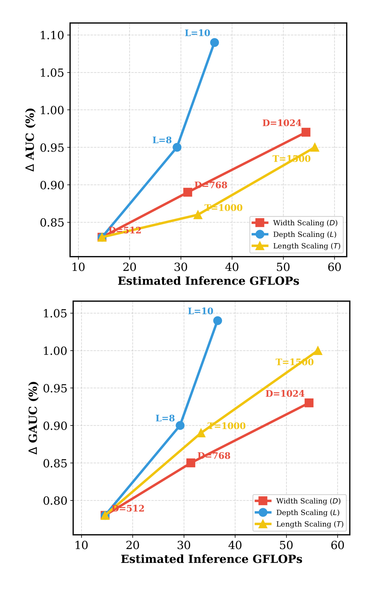
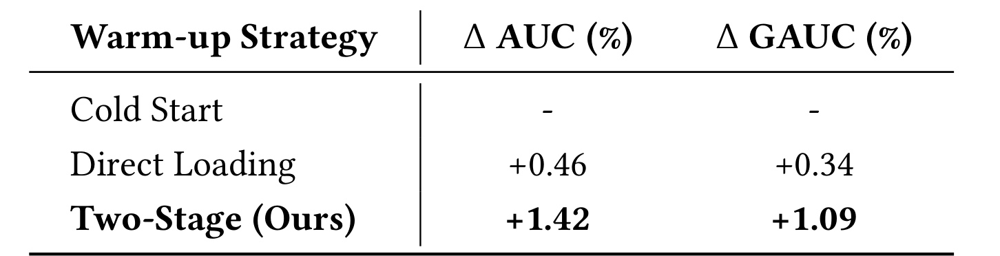
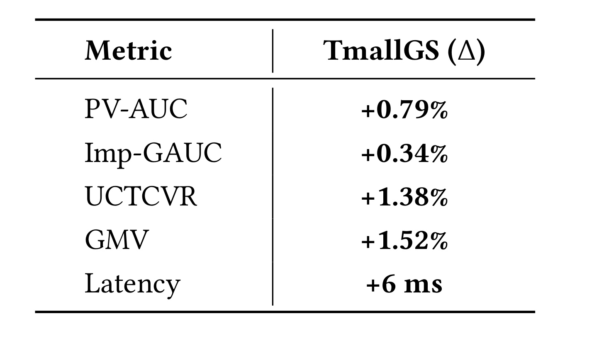

TMallGS：面向生成式电商搜索的统一特征与序列建模扩展
论文 TMallGS: Scaling Unified Feature and Sequence Modeling for Generative E-commerce Search 由东南大学的 Zhentao Song 与淘宝天猫集团、北京大学研究者合作完成，发表于 KDD 2026。它讨论的不是让大模型直接生成商品文本或商品 ID，而是把 LLM 时代“统一序列 + 深层 Transformer + 计算扩展”的建模范式迁移到天猫搜索精排的 CTR 预测。论文入口为 arXiv:2607.13398。截至本次核验，摘要页和论文正文未给出与本文一一对应的独立代码或项目页。
传统 DLRM 受不规则稀疏访存和扩展收益饱和约束，但把 LLM 式统一 Transformer 直接搬到高精度搜索精排，又会同时引入异质字段的梯度冲突、深层注意力对显式 query-item 匹配信号的稀释，以及深网络二分类训练中的梯度消失和难样本学习不足。
1. 背景和问题
1.1 从 memory-bound DLRM 到 compute-centric ranking
工业 CTR 排序长期采用 embedding table 加浅层 MLP 的 DLRM 路线。它的优势是记忆能力强、业务特征接入直接、训练经验成熟；但主要计算往往不是规则而密集的矩阵乘，而是对巨大稀疏表做随机读取。现代 GPU 的 Tensor Core 很难在这种访存模式下持续饱和，模型参数即使继续增加，也容易把成本花在内存带宽和通信上，而不是可高效利用的浮点运算上。论文把这个限制概括为“工业计算墙”：模型继续加宽或叠加交互层，性能边际收益下降，超长用户序列又会让传统目标注意力或浅层交互结构越来越吃力。
LLM 的经验提供了另一条路线：把表示和交互尽量统一到密集 Transformer 中，通过更规则的矩阵计算提高 Model FLOPs Utilization，并观察模型宽度、深度、序列长度与效果之间是否形成可预测关系。这里的“Scaling”不是简单把 embedding 表做大，而是把预算转移到能够被 GPU 高效执行的密集主干。TMallGS 因此把工业搜索排序重写为请求级序列建模：用户状态、当前查询、长期行为、查询历史和多个候选共同进入一个统一计算图，候选点击概率仍是最终输出。
论文题目使用“Generative E-commerce Search”，容易让人误以为模型执行自回归商品生成。实际上，文中的任务定义仍是监督式 CTR 估计器 \(f_\theta:\mathcal{X}\rightarrow[0,1]\)，一次请求包含用户 \(u_i\)、查询 \(q_i\)、候选集合 \(\mathcal{C}_i=\{c_1,\ldots,c_M\}\) 和每个候选的点击标签。所谓“generative”更接近一种统一序列架构和可扩展计算范式，而不是改变输出空间。因此评价仍以 AUC、GAUC、UCTCVR、GMV 等排序和业务指标为主，不能把本文当成生成式召回或生成商品列表的工作。
1.2 搜索精排比通用序列建模多出的三重约束
第一重约束是异质性。搜索输入并非同质 token：当前 query 很短但决定硬约束，用户历史可能长达上千步，候选 ItemID 是稀疏离散特征，query-item 匹配分、统计交叉率等又是高价值连续信号。如果所有字段共用同一套投影和同一种归一化，它们会在同一参数空间中争夺梯度；高频稳定字段可能主导训练，长尾字段或分布剧烈变化的字段则难以获得合适尺度。通用 Transformer 假设 token 已经处在相近的语义空间，而工业特征在进入注意力之前就存在维度、稀疏度、噪声和统计分布差异。
第二重约束是显式匹配信号不能被深层语义交互冲淡。搜索与“模糊发现”型推荐不同，query-item 的词项匹配、类目一致性、历史转化率等重交叉特征经常直接决定精排边界。深层 Self-Attention 擅长融合上下文，却可能像低通滤波器一样逐层平滑尖锐信号。若把所有重交叉特征也 token 化并送入深主干，模型可能得到更通顺的全局表示，却丢掉精排所需的局部高频判别力。OneTrans 一类 all-in-tokenization 方案在本文实验中 AUC 提升明显，但 GAUC 相对弱，正是作者用于说明这一矛盾的证据。
第三重约束是请求级多候选排序的正确性与训练稳定性。同一搜索请求中的候选共享 query、用户状态和分页等上下文，但某个候选的分数不应依赖同页其他候选的身份，否则训练中可能出现候选间信息泄漏，部署时也会对候选集合变化敏感。与此同时，深层 CTR 网络只有末端 BCE 监督时，浅层和中层梯度容易衰减；简单对所有层、所有样本同权监督，又不能让更深层专注浅层没有解决的难样本。线上系统还要面对旧 embedding 资产迁移、服务延迟和全局点击先验偏置，架构必须同时回答“如何学”“如何排”“如何上线”。
把这些约束放在一起，就能理解为什么简单增加层数并不是充分解法。假设模型只把用户历史变长，却仍让 query、历史、候选和交叉分共享同一入口，那么更大的主干可能首先学会高频字段和全局点击率；它在总体 AUC 上变好，却未必更准确地区分同一次请求里的相似商品。反过来，如果继续沿 DLRM 思路为每类特征增设专门塔和手工交叉，虽然能保护业务信号，却会让系统重新变成多路异步访存与大量浅层专家的集合，难以获得密集计算的扩展优势。因此，论文真正要寻找的是一条中间路径：共享足够多，才能把算力集中到统一主干；隔离足够多，才能保住搜索特征的统计差异和硬匹配边界。
另一个容易忽略的问题是离线指标之间并不等价。全局 AUC 会奖励模型识别“哪些请求天然更容易点击”，而搜索排序真正关心的是在同一个 query、同一页候选中把更相关商品放在前面。分页、用户活跃度、流量入口等请求级先验对前者很有帮助，却可能掩盖候选相关性。因此，TMallGS 不只追求一个更强表示，还要求模型内部能说明哪些分支承担全局校准、哪些分支承担页内次序。后续的 Bias Net、候选可见性 mask 与 pairwise loss 都是在回应这个评价口径差异，而不是彼此独立的附加技巧。
从系统视角看，旧模型资产也构成问题的一部分。天猫精排不可能因为更换主干就丢弃长期训练的海量 ID embedding，也不能接受离线最深模型直接把线上延迟推过 SLA。一个完整方案必须证明：旧稀疏表示能平稳迁移到新密集空间；增加计算后仍可按宽度、深度和长度选择线上容量；模型收益能从离线 GAUC 传导到转化与交易，同时把延迟增量明确列出。正因如此，论文把 warm-up 和 30 天 A/B 放在主要实验里，而不是只在附录中补充部署说明。
1.3 论文的解题边界
TMallGS 先把特征空间拆为三类：请求级 Context Features，包括 query、用户画像和分页等共享信息；Sequence Features，包括 User Interaction History 与 User Query History；Candidate Features，包括 ItemID 等用于语义建模的 light attributes，以及 query-item 匹配分等用于精确校准的 heavy cross-attributes。这个拆分决定了后续信息流：轻特征进入统一序列和深层主干，重交叉特征绕开深层传播，在输出端重新调制语义表示；请求级偏置由独立 Anchor 吸收，候选相对顺序由主语义分支和 pairwise 目标负责。
这是一篇典型的工业系统论文：贡献不是某一个全新注意力算子，而是把 tokenization、字段投影、可见性、噪声门控、显式信号旁路、偏置建模、深监督、迁移协议和线上容量选择组合成闭环。评价它时也应区分三个层次：离线相对指标是否支持方法有效；消融是否能把各模块职责分开；线上 A/B 是否同时报告业务收益和时延代价。论文在这三方面都有证据，但数据、训练框架和流量口径均未公开，结论的外部可复现性有限。
2. 方法
2.1 分层分布校准 Tokenization：FSR 与 DCP
TmallGS 的第一步不是立即做注意力，而是把稀疏原始字段变成尺度更可控的 token。作者将该过程设计为“先粗后细”的两阶段过滤。Field-wise Saliency Reweighting（FSR）先在字段级估计全局重要性：对第 \(i\) 个字段 \(X_i\in\mathbb{R}^{L\times d_i}\)，同时沿时间轴和字段维度池化，得到一个标量描述；所有字段标量拼成向量后，经瓶颈门控网络生成显著性权重，再对原字段整体重加权。
符号解释：\(L\) 是字段序列长度，\(d_i\) 是第 \(i\) 个字段的原始维度，\(z_i\) 是同时聚合时间和通道后的字段描述，\(\delta\) 为 SiLU，\(W_{\mathrm{sq}}\) 与 \(W_{\mathrm{ex}}\) 构成压缩再扩张的瓶颈，\(w_i\) 是字段级软选择权重。FSR 不在每个 token 上堆重型 FFN，而是先判断“整块字段在当前请求中是否值得放大”，因此成本主要发生在少量 pooled scalar 上。它能抑制明显无关的字段，但无法单独处理字段内部激活分布和非线性投影。第二阶段 Distribution-Calibrated Projection（DCP）对重加权字段做更细的分布校准。作者定义 Calibrated-Swish：先对隐藏向量做 LayerNorm，再把归一化结果送进 sigmoid 形成自门控，并与原向量逐元素相乘。随后用两层线性映射把字段投到语义空间。
符号解释：\(\phi_{\mathrm{cal}}\) 是分布校准激活，LayerNorm 把门控输入拉回梯度敏感区，\(\sigma\) 产生逐维缩放，\(E_i\) 是最终字段 token。与直接使用 SwiGLU-FFN 相比，DCP 的意图不是追求最大表达容量，而是让不同字段先在统计尺度上更可比，再进入统一主干。论文称 FSR+DCP 相比重型 SwiGLU-FFN 减少约 33% projection FLOPs，消融中二者效果差距小于 0.03%；需要注意，这个比例针对投影模块，不代表端到端训练或线上时延同幅下降。

Figure 1 左侧把端到端链路分为三段。最底部先按 Bias、User、Query、UIH、UQH、Candidate Light 与 Candidate Cross 划分原始字段；Section A 中，FSR 从全局池化结果估计字段显著性，DCP 再把字段投到校准语义空间。Section B 将其中适合深层交互的 token 组成统一序列，堆叠若干 TmallGS Block；每个 block 内同时出现字段专属 QKV、候选隔离 mask 和噪声门。Section C 没有把重交叉特征丢弃，而是让它们在末端通过 SwiMLP/FiLM 调制候选表示，再与 Bias Net 产生的请求级偏置共同形成最终 logit。右侧是训练时的逐层辅助头：浅层误差决定更深层样本权重，末层还接 pairwise loss。图中最重要的不是模块数量，而是信息何时融合：语义交互早发生，显式交叉校准晚发生，偏置与相关性在 logit 层相加，训练难度沿深度逐层传递。这张图也揭示了方法的一个工程取舍：TmallGS 并非真正“所有东西都统一”。它只统一适合被 Transformer 平滑和组合的轻属性、上下文与序列；对高频硬信号、请求级偏置和深层训练难度分别保留专门通道。论文所谓 unified feature and sequence modeling，实质是统一主干与受控旁路并存。如果把旁路删掉，架构更像通用 LLM，但精排所需的局部信号会受损；如果保留传统所有专家塔，又回到难以扩展和低 MFU 的 DLRM。
2.2 请求级序列与字段自适应 TmallGS Block
经过 FSR+DCP 后，模型把请求级信息按固定语义顺序组装。Context Bias Anchor 放在序列首位，用于聚合分页、流量环境等全局上下文；随后是用户上下文、当前查询、用户交互历史 UIH、用户查询历史 UQH，以及每个候选的 light attribute token。heavy cross-attributes 不进入这条深层序列，而留给 FiLM 晚融合。
符号解释：分号表示序列拼接，\(e_{\mathrm{bias}}\) 是请求级 Anchor，\(e_{\mathrm{ctx}}\) 和 \(e_{\mathrm{qry}}\) 表示用户/请求上下文与当前意图，\(H_{\mathrm{uih}}\) 和 \(H_{\mathrm{uqh}}\) 是两类历史序列，\(e_{\mathrm{cand}}^{\mathrm{light}}\) 是多个候选的轻属性表示。这种请求级构造避免对每个候选重复编码同一段用户与 query 上下文，理论上更适合一页多候选并行打分；代价是必须明确限制候选之间的可见性。通用 Transformer 对所有 token 共用 \(W_Q,W_K,W_V\)，而 TmallGS 按字段分配独立投影。若 token \(h_i\) 属于字段 \(\phi(i)\)，则：
符号解释：\(\phi(i)\) 标识 Query、UIH、Candidate 等字段，\(W_Q^{\phi(i)},W_K^{\phi(i)},W_V^{\phi(i)}\) 是字段专属矩阵。共享注意力仍负责跨字段交互，但进入注意力前，每类 token 先在自己的语义流形中旋转和缩放。这样做试图缓解短 query、长行为序列和候选 ID 在同一投影中产生的梯度冲突。它与多塔模型的区别是：字段只在投影入口保留专属参数，随后仍进入同一个全局主干，而不是各自完成完整编码。候选集合的可见性采用 Context-Dominant Mask。上下文前缀中的 token 彼此全可见；每个候选可以看全部上下文和自身，但不能看其他候选。形式上：
符号解释：\(\Omega_{\mathrm{ctx}}\) 是 Anchor、User、Query、UIH、UQH 等上下文集合，\(\Omega_{\mathrm{cand}}\) 是候选集合，\(M_{ij}\) 加到注意力 logit 上。候选 \(c_i\) 能借助共享 query 和用户历史完成匹配，却不能读取 \(c_j\) 的表征。这既阻断“同页其他候选泄漏答案”的 shortcut，也让单候选分数对候选集排列更稳定。需要留意的是，候选间竞争关系并未完全消失：最终 pairwise loss 仍在同请求正负对上优化，只是竞争通过目标函数发生，而不是通过前向注意力直接交换特征。行为序列中存在误点击、过期兴趣和与当前 query 无关的历史。标准 Softmax 即使面对全噪声，也必须把注意力权重归一化为 1，某些无关 token 总会获得非零质量。TMallGS 在注意力输出和 \(W_O\) 之间加入由 Pre-Norm 残差状态生成的逐维门：
符号解释：\(A\) 是标准注意力输出，\(X_{\mathrm{norm}}\) 是注意力前的稳定归一化状态，\(G\in(0,1)\) 不需要在序列维度和为 1，\(H\) 是门控后的输出。若某一维上下文不可靠，\(G\) 可以趋近 0，把注意力结果整体压低，而不是被迫在噪声 token 间重新分配概率。门由 Pre-Norm 状态而非不稳定的注意力输出生成，意图是保留残差身份作为判断信号。消融用标准注意力替换该门后，AUC 和 GAUC 分别下降 0.13% 和 0.16%，支持它对长行为噪声的作用，但论文没有提供按序列长度或噪声率分桶的专门实验，因此“避免长序列噪声累积”的机制仍主要靠总体结果和 scaling 曲线间接支撑。
2.3 FiLM 晚融合与 Context-Aware Bias Net
深层主干擅长建立语义关系，却可能反复混合并平滑 query-item 精确匹配分、统计交叉率等重特征。TmallGS 不让这些 heavy cross-attributes 贯穿所有 block，而是在最终候选状态 \(h_c^L\) 产生后重新接入。先将深层候选状态与候选全部特征 embedding 拼接为 \(u_c\)，再由候选特征产生 FiLM 的缩放和平移系数：
符号解释：\(\oplus\) 表示拼接，\(e_c^{\mathrm{all}}\) 同时包含 light 与 heavy candidate feature，\(\gamma_c\) 和 \(\beta_c\) 是候选条件化的逐维缩放、平移，\(v_{\mathrm{final}}\) 进入最终 Task Tower。写成 \(1+\gamma_c\) 而非只有 \(\gamma_c\)，意味着门控初始可接近恒等映射，降低训练早期把主干表示完全抹掉的风险。与简单 concat 相比，FiLM 允许重交叉信号直接改变每个语义维度的幅度和基线，因此更像“用硬匹配校准语义表征”，而不是再让一个 MLP 自己从拼接向量中发现应该强调什么。偏置路径处理的是另一类信息。分页、流量条件、用户状态等会整体改变同一请求中所有候选的点击先验。若这些先验与相关性混在一个 logit 中，模型可能用“这一页整体更容易点”替代“哪个候选更相关”。TmallGS 让首位 Anchor 经过全部上下文交互后得到 \(h_{\mathrm{bias}}^L\)，再投影为一个请求级 bias logit：
符号解释：\(\operatorname{logit}_{\mathrm{main}}\) 来自 FiLM 调制后的候选语义分支，\(\operatorname{logit}_{\mathrm{bias}}\) 对同一请求的候选共享，二者相加后做 sigmoid。这个设计不是把 bias 从预测中删除，而是把它单独建模和监控：pointwise BCE 可以利用全局先验改善校准，pairwise 目标则天然忽略共享偏置。对同请求中的点击候选 \(c^+\) 和未点击候选 \(c^-\)，两者 logit 作差时：
符号解释：正负候选共享同一个请求偏置，因此 bias 在差分中严格抵消；pairwise loss 只向 main branch 施加相对排序压力。作者把这称为正交优化：Bias Net 吸收影响全局 AUC 的请求先验，main branch 负责会话内 GAUC。它成立的边界是 bias 必须确实在候选间共享；若偏置与商品位置或候选属性耦合，单一 Anchor 标量未必能完整分离。论文也没有展示 bias logit 的可解释性、分桶稳定性或反事实干预结果，因此“正交”更多是结构和公式层面的保证。
2.4 误差感知逐层训练与联合目标
深层二分类网络若只在末层接损失，前部 block 可能收到很弱或高度间接的梯度。TMallGS 在每层候选状态上加轻量 Aux Head，生成中间预测 \(\hat y_l\)。第 \(l\) 层的绝对误差被用作第 \(l+1\) 层的样本权重，让更深层优先处理浅层仍然判断错误的样本：
符号解释：\(y\) 是点击标签，\(\delta_l\) 是当前层误差，\(\lambda\) 控制难样本加权强度，\(\alpha_{l+1}\) 是下一层 BCE 权重。StopGradient 很关键：误差只作为标量课程信号，不允许模型通过操纵 \(\delta_l\) 的梯度来降低未来层权重。因为 \(\delta_l\) 未截断，极难样本的权重可能持续偏大；论文没有报告 \(\lambda\) 的敏感性、噪声标签下的鲁棒性或权重分布，这也是复现时需要优先监控的地方。最终目标同时包含逐层 pointwise BCE 与末层会话内 pairwise ranking loss：
符号解释：\(\mathcal{P}\) 是同一 query session 内构造的有效点击/未点击候选对，\(|\mathcal{P}|\) 是 pair 数，pairwise 项直接要求正候选分数高于负候选。论文用的是预测值差而不是明确展示的 raw logit 差；具体数值稳定性与 pair 采样策略没有展开。
符号解释：\(L\) 是 block 层数，\(\alpha_l\) 由前一层误差决定，\(\gamma\) 平衡校准与会话内排序。逐层 BCE 保证每个深度都有直接监督，末层 pairwise 强化 GAUC；Bias Net 在 pairwise 差分中抵消，使排序压力集中在 main semantic branch。Table 3 中去掉 Pairwise Loss 后 AUC 反而微增 0.05%，GAUC 却下降 0.87%，很好地说明两类目标优化的不是同一件事。
附录 Algorithm 1 将训练流程串成 29 步：先计算字段显著性与 DCP token，再组装请求级序列；每个 block 产生 Aux Head、累积误差加权 BCE；末端执行 FiLM 与 Bias Net，计算 pairwise loss，最后联合更新。实现上，稀疏 embedding 使用 Adam，以适应长尾 ID 的非平稳梯度；密集 Transformer 与 MLP 使用 AdamW。训练和推理也要分开看：Aux Head、逐层误差权重和 pair 构造只在训练图中存在，线上只需主干、FiLM、Task Tower 与 Bias Net。论文没有报告这些训练附加头带来的显存和吞吐开销，因此摘要中“训练吞吐提升”不能仅从结构公式推导，需要结合作者未完整公开的分布式框架实现理解。
3. 实验结果
3.1 数据、基线与评价口径
由于公开搜索数据很少同时包含超长行为序列和显式 query-item 匹配信号，作者只在 Tmall App Search 专有日志上实验。数据连续覆盖 31 天，约 5 亿样本；前 30 天约 4.84 亿用于训练，最后一天 1600 万用于测试，保持时间顺序。用户约 1300 万、商品约 7400 万。用户行为平均长度被构造成 1500，作者称通过截断扩展的生命周期历史来保留近期交互。这个规模确实接近工业精排，但也意味着所有模型结论都绑定天猫特征体系、流量分布和点击标签。

Table 1 的关键不只是“样本多”，而是时间切分、实体规模和序列长度共同决定任务难度。按前 30 天训练、最后一天测试，比随机切分更接近线上分布漂移，但论文没有说明一天内是否按请求去重、负样本如何产生、延迟反馈如何处理，也没有给点击率或正负比。平均长度 1500 远高于很多工业序列模型常见的数百步，因此能放大 Transformer 对长历史的优势；同时它也可能让模型更容易从用户活跃度、生命周期等强先验获益。用户和物品规模说明稀疏 embedding 仍是主体资产，TMallGS 并非摆脱稀疏表，而是把主要交互计算迁移到密集主干。
实验使用 16 张高性能 Nvidia GPU，全局 batch size 为 4096，学习率 \(2\times10^{-4}\)。论文没有给 GPU 型号、总训练步数、wall-clock 时长、峰值显存和完整吞吐表，因此无法把“提高 MFU/吞吐”转化为跨硬件可比较数字。基线分为两组：DNN、DIN、DCNv2、APG 等传统架构；HiFormer、RankMixer、HHFT、HSTU、MTGR、OneTrans 等可扩展架构。作者还说明生产基线是 DNN 与 RankMixer 组合，但主结果表所有相对增益以 DIN 为零点，这两个口径需要分开读。
AUC 评价全局正负样本区分，GAUC 则先在用户-查询会话内计算 AUC，再按曝光量加权：
符号解释：\(\mathcal{D}^{+}\) 和 \(\mathcal{D}^{-}\) 是全局正负样本集合，指标衡量任取正样本排在负样本之前的概率。它可能受到不同 query 间基础点击率差异影响。
符号解释：\(\operatorname{AUC}_{(u,q)}\) 只在同一用户-查询候选集内计算，\(w_{(u,q)}\) 是该会话曝光数。搜索更关心同一 query 下谁排在前面，因此 GAUC 与 pairwise 目标更直接对应。作者称工业推荐中 GAUC 绝对增加 0.001 已有统计意义，但表格只报告相对百分比，没有给绝对值，无法独立核对这一判断。
3.2 离线主结果：扩展能力与精排信号同时保留
主结果以 DIN 为 0.00 相对基准。传统模型中 DCNv2 为 +0.11% AUC、+0.19% GAUC，APG 为 +0.21%/+0.27%。可扩展架构整体更强：HSTU +0.58%/+0.61%，MTGR +0.64%/+0.69%，OneTrans +0.82%/+0.75%，RankMixer +0.39%/+0.77%。TMallGS 达到 +1.12% AUC、+1.26% GAUC，是表中两项最佳。作者据此认为密集可扩展主干优于 memory-bound DLRM，同时其语义-交互解耦避免了通用 Transformer 的精排信号稀释。

Table 2 最有信息量的对比不是 TmallGS 与最弱基线之间的差距，而是 OneTrans、RankMixer 和 TmallGS 的指标形状。OneTrans 的 AUC +0.82% 高于 RankMixer 的 +0.39%，GAUC +0.75% 却略低于 RankMixer 的 +0.77%；这说明统一深层建模可能改善全局校准，却未必同步改善同 query 内候选次序。TMallGS 的 +1.12%/+1.26% 同时抬升两项，和 FiLM、Bias Net、Pairwise Loss 的设计目标一致。不过该表只给单点相对提升，没有多次运行标准差、显著性或绝对基线；不同模型的参数量也只通过“Transformer hidden size 相同、DNN hidden dimension 相同”做部分控制，不能确认总 FLOPs、序列处理量和 embedding 参数完全等价。
作者把生产基线写为 DNN+RankMixer，而表格的零点是 DIN，这可能造成两个常见误读。第一，TmallGS 的 +1.26% GAUC 不是相对 RankMixer 的直接提升；若按表中相对 DIN 的数值粗略比较，差距约 0.49 个百分点，但相对增益不能简单相减为严格实验效应。第二，论文摘要的线上提升来自部署配置和 A/B，不应与离线相对 DIN 数字混合。更稳妥的结论是：在作者统一设置下，TMallGS 离线排序指标领先所列基线；其优势是否主要来自更高计算量，仍需结合 scaling 与消融阅读。
3.3 消融：信号、噪声、偏置和排序目标各管什么
Table 3 分为四组。交互解耦组在“block 内含 cross-feature”和“不含 cross-feature”两种设置下比较 FiLM。含 cross-feature 时去 FiLM，AUC/GAUC 分别下降 0.21%/0.32%；把 FiLM 换成 concat，下降 0.15%/0.24%。即使 block 内不含重交叉特征，去 FiLM 仍下降 0.17%/0.19%，concat 下降 0.10%/0.11%。这说明晚融合的乘加调制不仅补一份特征输入，还改变了显式信号控制语义表示的方式。

Table 3 让各模块的职责可以通过 AUC/GAUC 的非对称变化来阅读。把噪声门控换成标准注意力，AUC -0.13%、GAUC -0.16%，两项同时下降，符合它改善长序列表示质量的定位。Tokenization 中 Only DCP 为 -0.08%/-0.06%，Only FSR 为 -0.13%/-0.09%，说明宏观字段选择和细粒度分布校准互补；FSR+DCP 换普通 MLP 为 -0.17%/-0.11%，换 SwiGLU-FFN 只为 -0.05%/-0.03%，支撑“轻量校准接近重型投影”的说法，但没有直接展示 33% FLOPs 与端到端吞吐对应关系。
训练与优化组更能说明目标分工。去 Bias Net 为 -0.07% AUC、-0.13% GAUC，去 Progressive Training 为 -0.11%/-0.08%，两者是稳定但不巨大的全面损失。去 Pairwise Loss 时 AUC +0.05%，GAUC 却 -0.87%，表明单纯 pointwise 校准甚至可能稍微改善全局区分，却明显破坏同请求相对顺序。去 UQH 序列时 AUC -0.65%、GAUC -0.29%，说明查询历史更像长期意图和全局点击概率的重要来源，而不是只服务页内竞争。这个结果也提醒线上监控不能只看一个综合指标：模块可能对 AUC、GAUC、转化和延迟产生不同方向影响。
消融仍有三点不足。其一，表中没有参数量匹配后的“只增同等 FLOPs”对照，无法完全排除部分提升来自额外模块容量。其二，没有逐序列长度、query 频次、长尾商品或强/弱匹配分桶，机制与样本类型的对应关系不够直接。其三，数值都没有置信区间；像 -0.03% 这种小差异是否稳定，不能仅凭一轮结果判断。复现时应至少为完整模型、SwiGLU 替换和 Pairwise Loss 消融运行多随机种子，并报告绝对 GAUC。
3.4 Scaling 曲线与容量选择
作者沿三条轴扫描主干：宽度 \(D\in\{512,768,1024\}\)，深度 \(L\in\{4,8,10\}\)，序列长度 \(T\in\{500,1000,1500\}\)。Figure 2 横轴是估算推理 GFLOPs，纵轴分别是相对 DIN 的 AUC 和 GAUC 增益。三条曲线在给定点上均单调增加；深度曲线最陡，长度到 1500 仍未出现明显饱和，宽度也持续提升。

Figure 2 支持“增加密集计算能继续换来效果”，但还不足以证明严格意义上的 scaling law。每条轴只有三个离散点，作者没有给幂律拟合、指数、残差、误差条或跨预算外推；横轴 GFLOPs 也是估算推理成本，不等于训练总成本或线上 P99。深度从 4 到 10 的斜率最陡，说明在离线点位上加层收益大；线上却最终选择 4 层、1024 维和长度 1500，反映实际部署更偏好浅而宽、长序列的并行结构。也就是说，离线 ROI 与线上延迟 Pareto 并不相同，不能只看曲线最高点决定配置。
图中长度曲线在 \(T=1500\) 仍上升，作者把它归因于 noise-adaptive gate 避免长历史噪声累积。这个解释有合理性，但缺少无门控版本的长度扫描，因此无法确认增长完全由门控带来。更严格的验证应在 \(T=500/1000/1500\) 下同时对比标准注意力与门控注意力，并报告有效历史覆盖、注意力稀疏度、不同 query 类型的收益。当前证据能支持“TMallGS 在给定范围内随长度继续获益”，不能推出序列无限增长仍有效。
3.5 两阶段 warm-up 与线上 A/B
从成熟 DLRM 迁移时，旧 sparse embedding 已经携带大量 ID 记忆，但新 dense backbone 的表示流形不同。直接加载旧 embedding 并与随机初始化主干联合训练，可能造成早期梯度冲突。作者采用两阶段 warm-up：先冻结 sparse embedding，只训练密集主干以对齐旧表示；再解除冻结，端到端联合微调。Table 5 中，Cold Start 为零点，Direct Loading 为 +0.46% AUC/+0.34% GAUC，两阶段达到 +1.42%/+1.09%。

Table 5 的启发在于，模型结构升级不能只比较最终网络，还要把参数资产迁移协议纳入实验。直接加载已经比从零冷启动更好，说明旧 embedding 的记忆价值真实存在；两阶段进一步提升，说明先稳定 dense backbone 的输入空间、再允许 sparse table 漂移，比一开始让两者共同变化更容易收敛。但表中没有给冻结时长、学习率切换、收敛曲线或总训练成本；+1.42%/+1.09% 是相对 Cold Start 的结果，不等同于相对 Direct Loading 再提升同样数值。对于拥有长期 ID embedding 的推荐系统，这个策略值得复现，但应同时比较蒸馏、adapter、逐层解冻和 optimizer state 迁移。
线上配置并没有使用离线 scaling 扫描的最深模型，而是 4 层、1024 hidden dimension、8 个 attention head、序列长度 1500，密集主干约 0.05B 参数。作者给出的理由是：长序列保留长期兴趣，浅而宽的结构更适合 GPU 并行并满足高 QPS。30 天 A/B 报告 PV-AUC +0.79%、Imp-GAUC +0.34%、UCTCVR +1.38%、GMV +1.52%，平均延迟增加 6ms，作者称所有指标 \(p<0.05\)。

Table 4 同时放出效果和成本，这是评价上线价值时应保留的完整口径。UCTCVR 与 GMV 的提升说明排序变化传导到转化和交易，但没有流量规模、绝对基线、实验分桶、置信区间与显著性检验方法，外部无法判断效应大小和波动。PV-AUC、Imp-GAUC 与离线 AUC/GAUC 名称相近但口径可能不同，不能默认一一对应。+6ms 只给平均增量，论文未提供 P95/P99、峰值 QPS、GPU 型号、batching、模型压缩或失败降级策略；作者称仍在生产 SLA 内，却没有公布 SLA 数值。
因此，线上结果可以支持“TMallGS 在天猫特定配置上实现正向 A/B 且延迟可接受”，不能直接外推为任意电商搜索都能获得 +1.52% GMV。真正可迁移的是决策方法：先用离线 scaling 找到有收益的容量轴，再按线上并行性选浅宽长配置；用两阶段 warm-up 继承旧 sparse 资产；同时监控页内排序、业务转化和延迟。若只复制模型模块而不复制迁移、容量和监控流程，最可能在训练不稳或服务预算处失败。
4. 总结
4.1 这篇论文真正提供了什么
TMallGS 的核心贡献可以概括为“有边界的统一”。它接受 compute-centric Transformer 作为主干，但不把工业搜索的所有信号都粗暴 token 化：FSR+DCP 先校准字段分布；per-field QKV 让异质字段保留各自投影；候选隔离 mask 保证请求级多候选建模的正确性；noise-adaptive gate 给长行为序列一个跳出 Softmax 强制归一化的噪声抑制通道；heavy cross-feature 通过 FiLM 在末端恢复高频判别力；Anchor Bias Net 与 pairwise 差分把全局点击先验和相对相关性分开；逐层误差权重解决深层监督与难样本课程。
对推荐与搜索工程，最值得迁移的不是某个公式，而是信息流的分工。可被语义组合的轻特征进入统一主干，必须保真的显式交叉信号晚融合，请求级共享偏置独立建模，候选竞争留给 pairwise 目标。类似思想可用于 LLM reranking、广告精排和个性化 RAG：长上下文编码器负责语义，规则/统计匹配分不必强行塞进每层注意力，可以在末端做条件调制；会话级或页面级先验应与候选相关性分开，避免模型用环境偏置替代内容判断。
对大模型架构研究，本文提醒“统一 token 空间”并不意味着所有模态、字段和目标都应共享完全相同的入口。工业特征的分布异质性比自然语言 token 更强，字段专属投影和校准可能是把 LLM 主干迁移到结构化数据的必要 inductive bias。与此同时，论文没有执行自回归生成，不能据此证明生成式检索优于判别式排序；它证明的是密集 Transformer 排序器在适当解耦后可以利用更高 MFU 和有限范围内的容量扩展。
4.2 局限、风险与后续跟进
局限一：复现边界很强。 数据、特征、训练框架、流量、绝对指标和硬件均未公开，代码也未核验到独立入口。公开研究者无法构造同时包含长度 1500 行为、query 历史、heavy cross-feature 与页面级候选的等价基准。离线相对提升和线上 GMV 只能视为作者场景证据。
局限二：Scaling 证据仍是有限扫描。 每条容量轴只有三个点，没有拟合方程、误差条或预算外外推。深度离线斜率最强，线上却选择 4 层，说明效果曲线不能脱离延迟约束解释。论文更准确的结论是“在已测 GFLOPs 范围内单调提升”，而不是已经建立普适 scaling law。
局限三：机制证据不够分桶化。 噪声门控没有按序列长度、历史噪声率和 query 类型报告；FiLM 没有按强/弱显式匹配信号报告；Bias Net 没有展示 bias logit 的分布和反事实分析；Progressive Training 没有给 \(\lambda\) 敏感性、难样本权重分布与标签噪声鲁棒性。总体消融支持模块有效，但还不能完整证明作者给出的每条因果解释。
局限四：线上成本披露不足。 +6ms 只有平均增量，没有尾延迟、吞吐、GPU 成本、batching、峰值和降级策略。0.05B dense backbone 对通用 LLM 很小，对高 QPS 精排却可能显著增加成本；若业务转化收益不稳定，容量选择可能需要更保守。
后续最值得做三组实验。第一，在可公开的搜索或推荐序列数据上构造 light/heavy 特征分流，对比 all-in-tokenization、concat late fusion 与 FiLM late fusion，并报告绝对 AUC/GAUC、多随机种子和参数/FLOPs 匹配。第二，做 \(T\times\) attention variant 的二维扫描：在不同序列长度下比较标准 Softmax、noise-adaptive gate 和稀疏注意力，验证收益是否真的来自噪声抑制。第三，复现两阶段 warm-up 的完整收敛曲线，加入逐层解冻、蒸馏和 adapter 对照，同时报告训练 wall-clock、峰值显存与线上 P99。
如果关注工业落地，还应继续跟踪作者是否公开 TorchEasyRec 配置、特征 schema、训练 recipe 或 KDD 附加材料，并核对最终会议版本是否补充绝对指标与系统吞吐。当前最稳妥的判断是：TMallGS 提供了一套把密集 Transformer 引入电商搜索精排的完整设计图，并用专有离线、消融和 30 天线上 A/B 证明其在天猫场景可行；其跨平台普适性、严格 scaling 规律与成本收益仍需更多公开证据。